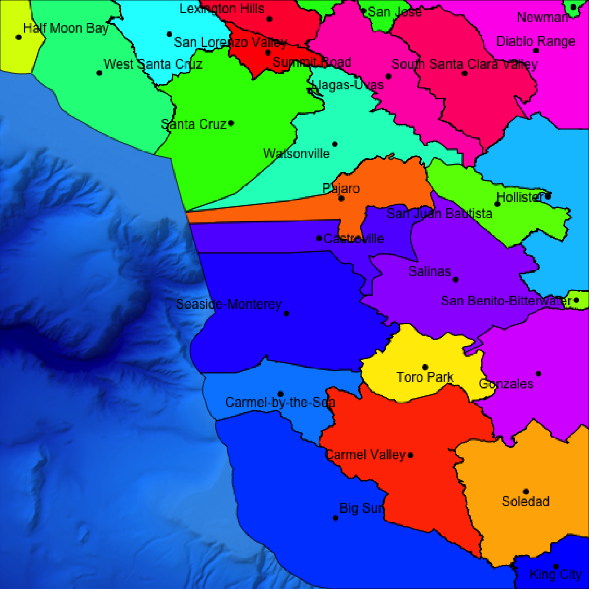
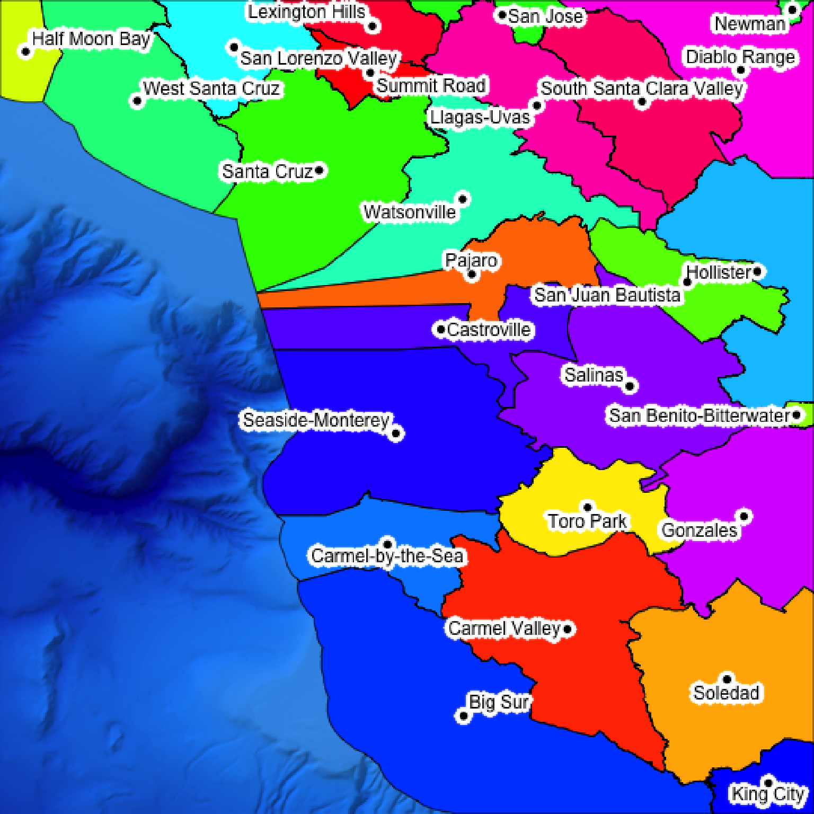
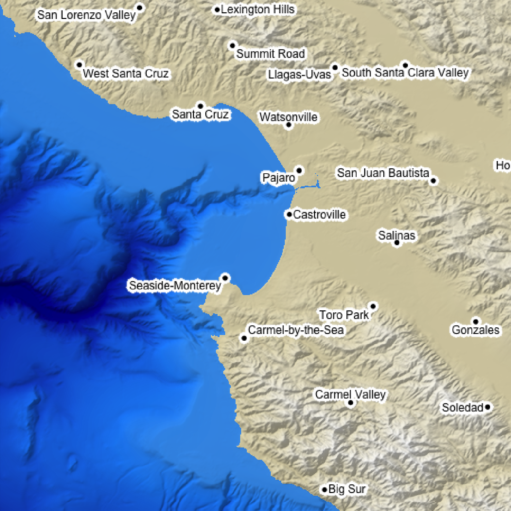
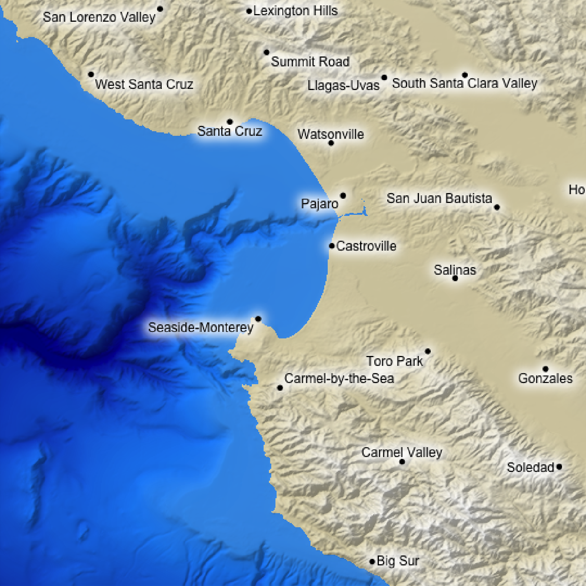
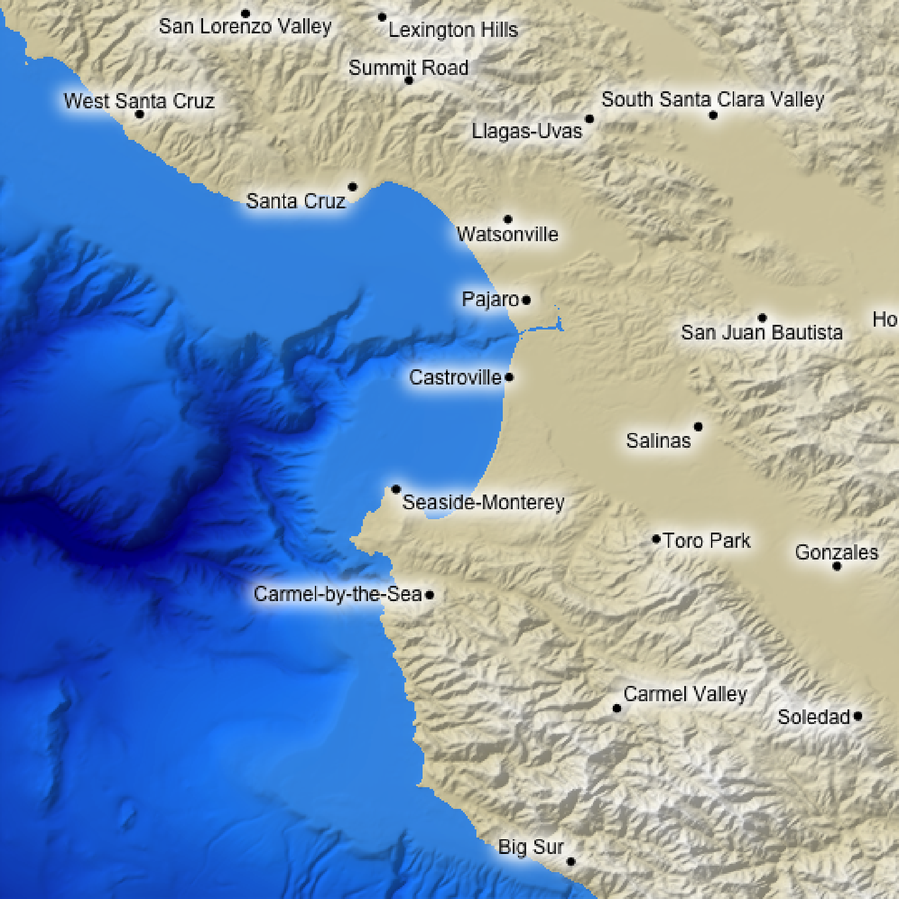

This uses the `maptools::placeLabel()` function to generate labels for the given scene. Either use an `sf` object or manually specify the x/y coordinates and label.
generate_label_overlay( labels, extent, x = NULL, y = NULL, heightmap = NULL, width = NA, height = NA, text_size = 1, color = "black", font = 1, pch = 16, point_size = 1, point_color = NA, offset = c(0, 0), data_label_column = NULL, halo_color = NA, halo_expand = 0, halo_alpha = 1, halo_offset = c(0, 0), halo_blur = 1, seed = NA )
| labels | A character vector of labels, or an `sf` object with `POINT` geometry and a column for labels. |
|---|---|
| extent | A `raster::Extent` object with the bounding box for the height map used to generate the original map. |
| x | Default `NULL`. The x-coordinate, if `labels` is not an `sf` object. |
| y | Default `NULL`. The y-coordinate, if `labels` is not an `sf` object. |
| heightmap | Default `NULL`. The original height map. Pass this in to extract the dimensions of the resulting overlay automatically. |
| width | Default `NA`. Width of the resulting overlay. Default the same dimensions as height map. |
| height | Default `NA`. Width of the resulting overlay. Default the same dimensions as height map. |
| text_size | Default `1`. Text size. |
| color | Default `black`. Color of the labels. |
| font | Default `1`. An integer which specifies which font to use for text. If possible, device drivers arrange so that 1 corresponds to plain text (the default), 2 to bold face, 3 to italic and 4 to bold italic. |
| pch | Default `20`, solid. Point symbol. `0` = square, `1` = circle, `2` = triangle point up, `3` = plus, `4` = cross, `5` = diamond, `6` = triangle point down, `7` = square cross, `8` = star, `9` = diamond plus, `10` = circle plus, `11` = triangles up and down, `12` = square plus, `13` = circle cross, `14` = square and triangle down, `15` = filled square, `16` = filled circle, `17` = filled triangle point-up, `18` = filled diamond, `19` = solid circle, `20` = bullet (smaller circle), `21` = filled circle blue, `22` = filled square blue, `23` = filled diamond blue, `24` = filled triangle point-up blue, `25` = filled triangle point down blue |
| point_size | Default `0`, no points. Point size. |
| point_color | Default `NA`. Colors of the points. Unless otherwise specified, this defaults to `color`. |
| offset | Default `c(0,0)`. Horizontal and vertical offset to apply to the label, in units of `geometry`. |
| data_label_column | Default `NULL`. The column in the `sf` object that contains the labels. |
| halo_color | Default `NA`, no halo. If a color is specified, the text label will be surrounded by a halo of this color. |
| halo_expand | Default `2`. Number of pixels to expand the halo. |
| halo_alpha | Default `1`. Transparency of the halo. |
| halo_offset | Default `c(0,0)`. Horizontal and vertical offset to apply to the halo, in units of `geometry`. |
| halo_blur | Default `1`. Amount of blur to apply to the halo. Values greater than `30` won't result in further blurring. |
| seed | Default `NA`, no seed. Random seed for ensuring the consistent placement of labels around points. |
Semi-transparent overlay with labels.
#Add the included `sf` object with roads to the montereybay dataset # \donttest{ #Create the water palette water_palette = colorRampPalette(c("darkblue", "dodgerblue", "lightblue"))(200) bathy_hs = height_shade(montereybay, texture = water_palette) #We're plotting the polygon data here for counties around Monterey Bay. We'll first #plot the county names at the polygon centroids. bathy_hs %>% add_shadow(lamb_shade(montereybay,zscale=50),0.3) %>% add_overlay(generate_polygon_overlay(monterey_counties_sf, palette = rainbow, extent = attr(montereybay,"extent"), heightmap = montereybay)) %>% add_overlay(generate_label_overlay(labels=monterey_counties_sf, color="black", point_size = 1, text_size = 1, data_label_column = "NAME", extent= attr(montereybay,"extent"), heightmap = montereybay, seed=1)) %>% plot_map()#It's hard to read these values, so we'll add a white halo. bathy_hs %>% add_shadow(lamb_shade(montereybay,zscale=50),0.3) %>% add_overlay(generate_polygon_overlay(monterey_counties_sf, palette = rainbow, extent = attr(montereybay,"extent"), heightmap = montereybay)) %>% add_overlay(generate_label_overlay(labels=monterey_counties_sf, color="black", point_size = 1, text_size = 1, data_label_column = "NAME", extent= attr(montereybay,"extent"), heightmap = montereybay, halo_color = "white", halo_expand = 3, seed=1)) %>% plot_map()#Plot the actual town locations, using the manual plotting interface instead of the `sf` object montereybay %>% height_shade() %>% add_overlay(generate_altitude_overlay(bathy_hs, montereybay, 0, 0)) %>% add_shadow(lamb_shade(montereybay,zscale=50),0.3) %>% add_overlay(generate_label_overlay(labels=as.character(monterey_counties_sf$NAME), x=as.numeric(as.character(monterey_counties_sf$INTPTLON)), y=as.numeric(as.character(monterey_counties_sf$INTPTLAT)), color="black", point_size = 1, text_size = 1, extent= attr(montereybay,"extent"), heightmap = montereybay, halo_color = "white", halo_expand = 3, seed=1)) %>% plot_map()#Adding a softer blurred halo montereybay %>% height_shade() %>% add_overlay(generate_altitude_overlay(bathy_hs, montereybay, 0, 0)) %>% add_shadow(lamb_shade(montereybay,zscale=50),0.3) %>% add_overlay(generate_label_overlay(labels=as.character(monterey_counties_sf$NAME), x=as.numeric(as.character(monterey_counties_sf$INTPTLON)), y=as.numeric(as.character(monterey_counties_sf$INTPTLAT)), color="black", point_size = 1, text_size = 1, extent= attr(montereybay,"extent"), heightmap = montereybay, halo_color = "white", halo_expand = 3, halo_blur=10, seed=1)) %>% plot_map()#Changing the seed changes the locations of the labels montereybay %>% height_shade() %>% add_overlay(generate_altitude_overlay(bathy_hs, montereybay, 0, 0)) %>% add_shadow(lamb_shade(montereybay,zscale=50),0.3) %>% add_overlay(generate_label_overlay(labels=as.character(monterey_counties_sf$NAME), x=as.numeric(as.character(monterey_counties_sf$INTPTLON)), y=as.numeric(as.character(monterey_counties_sf$INTPTLAT)), color="black", point_size = 1, text_size = 1, extent= attr(montereybay,"extent"), heightmap = montereybay, halo_color = "white", halo_expand = 3, halo_blur=10, seed=2)) %>% plot_map()# }